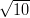

Multi-sample comparison of detrital age distributions
Pieter VermeeschUniversity College London
Gower Street, London WC1E 6BT
+44 (0)20 7679 2418
p.vermeesch[at]ucl.ac.uk
[correction]
_____________________________________________________
Abstract
The petrography and geochronology of detrital minerals form rich archives of
information pertaining to the provenance of siliclastic sediments. The composition
and age spectra of multi-sample datasets can be used to trace the flow of
sediments through modern and ancient sediment routing systems. Such studies
often involve dozens of samples comprising thousands of measurements. Objective
interpretation of such large datasets can be challenging and greatly benefits from
dimension-reducing exploratory data analysis tools. Principal Components
Analysis (PCA) is a proven method that has been widely used in the context of
compositional data analysis and traditional heavy mineral studies. Unfortunately,
PCA cannot be readily applied to geochronological data, which are rapidly
overtaking petrographic techniques as the method of choice for large scale
provenance studies. This paper proposes another standard statistical technique
called Multidimensional Scaling (MDS) as an appropriate tool to fill this
void. MDS is a robust and flexible superset of PCA which makes fewer
assumptions about the data. Given a table of pairwise ‘dissimilarities’
between samples, MDS produces a ‘map’ of points on which ‘similar’ samples
cluster closely together, and ‘dissimilar’ samples plot far apart. It is shown
that the statistical effect size of the Kolmogorov-Smirnov test is a viable
dissimilarity measure. This is not the case for the p-values of this and
other tests. To aid in the adoption of the method by the geochronological
community, this paper includes some simple code using the statistical
programming language R. More extensive software tools are provided on
http://mudisc.london-geochron.com.
_____________________________________________________
1. Introduction
|
Figure 1:
Sample locations and Kernel Density Estimates (KDEs, Vermeesch, 2012)
of the Chinese loess study (N = number of concordant ages). Samples 1-5,
7 and 9-10 – dune sand; samples 6 and 8 – Cretaceous sandstone; sample L
– Quaternary loess; sample Y – fluvial sand from the Yellow River; sample
T – compilation of proposed sources in Yellow River headwaters from Pullen
et al. (2011).
|
{kind=link}
Ever since the development of single grain U-Pb dating by (ion and laser) microprobe analysis, the method has been applied to detrital zircon (DZ) as a means of reconstructing the provenance of siliciclastic rocks. Initially, DZ geochronology was primarily used to trace the provenance of such rocks back to individual ‘protosources’ or source terranes (Gehrels et al., 1995; Pell et al., 1997). But in recent years, the ever-increasing throughput and ever decreasing cost of DZ geochronology has enabled a more sophisticated kind of applications, in which the U-Pb age distributions of multiple samples are used as a characteristic ‘fingerprint’ to trace the flow of zircon grains through the sediment routing system.
This paper introduces methods that make the interpretation of such datasets more objective, using a recently published provenance study from China as an example. Stevens et al. (2012) present a dataset comprising ten sand(stone) samples from the Mu Us desert, a Quaternary loess sample, a modern fluvial sand sample from the Yellow River, and a dataset of DZ ages from the Tibetan headwaters of the Yellow River taken from Pullen et al. (2011). The degree of similarity between these samples can be assessed on a qualitative basis by jointly plotting their respective age spectra (Figure 1). Another commonly used visual aid is the so-called ‘QQ plot’, in which various quantiles of the samples are plotted against each other, the idea being that two samples follow an identical distribution if and only if their quantiles plot on a 1:1-line (Figure 2).
|
Figure 2: Q-Q plots of the Chinese U-Pb dataset. Blue dots represent the 0,
5, 10, ..., 95 and 100 percentiles (or ‘quantiles’) of the samples whose names
are shown on the X- and Y-axis, respectively. Two samples follow an identical
distribution if and only if their percentiles fall on the 1:1-line.
|
{kind=link}
Both the QQ plots and the age spectra can become unwieldy if they contain more than a dozen or so samples. For example, Figure 1 contains n=13 Kernel Density Estimates (KDEs, Vermeesch, 2012) showing the probability distributions of 2,025 single grain age estimates, while the QQ-plots in Figure 2 form an upper triangular matrix with n(n-1)/2 = 78 pairwise comparisons. This is simply too much information for the human eye to process. To solve this problem, we need a ‘filter’ removing the redundant features of the individual distributions while preserving and amplifying the significant differences between them. This paper makes the case that a standard statistical technique called Multidimensional Scaling (MDS) can be used effectively for this purpose (Sections 3 and 4).
In addition to the DZ ages, all but one (T) of the samples in the Chinese study were subjected to heavy mineral (HM) analysis. With the exception of samples 1 and 8, the HM analyses were performed on separate aliquots from the U-Pb measurements. For samples 1 and 8, the HM mounts were prepared by mixing leftover mineral separates from the DZ study. Between 201 to 419 grains were counted in the 63-250μm size fraction of each sample, resulting in an additional 2,901 datapoints. Part of the aim of this paper is to treat these categorical data on an equal footing with the continuous age data in a consistent mathematical framework (Section 5). All the analyses presented in this paper can be reproduced using the software discussed in Section 6 and made available on http://mudisc.london-geochron.com.
2. Measuring the dissimilarity between two samples
Before discussing multi-sample comparisons, it is useful to review the underlying principles for measuring the dissimilarity (δi,j) between two samples (i and j, say). It is desirable for any dissimilarity measure to fulfil the following four requirements:
| δi,j | should be independent of sample size N | (1) | ||
| δi,j | = 0 if i = j and δi,j > 0 otherwise | (nonnegativity) | (2) | |
| δi,j | = δj,i | (symmetry) | (3) | |
| δi,k | ≤ δi,j + δj,k | (triangle inequality) | (4) |
The first requirement is important for the Chinese loess study, as it would be impossible to compare samples 6 (N = 58) and T (N = 772) otherwise. If a dissimilarity measure fulfils the remaining three conditions, then it is said to be a ‘metric’. One example of such a metric is the Euclidean distance (di,j). Given two R-dimensional points xi = (xi1,x i2,…,x iR) and x j = (xj1,x j2,…,x jR), the Euclidean distance is given by:
|
| (5) |
Unfortunately, the space of detrital age distributions (which is a ‘function space’) is not a Euclidean space. And neither is the space of HM compositions (which is a ‘simplex’). Therefore, the Euclidean distance cannot be directly applied to either DZ or HM data. However, HM compositions can be converted to a Euclidean space by applying a so-called logratio transformation. Further details about this are provided in Appendix A. Unfortunately, no such transformation exist for geochronological data, and we can therefore not use the Euclidean distance to compare these. Fortunately, several alternatives are available that also fulfil conditions 1-4. One of these is the sample effect size of the Kolmogorov-Smirnov (KS) test:
|
| (6) |
where |⋅| stands for the absolute value and F(t) is the empirical cumulative distribution function (CDF):
|
| (7) |
Note that Equation 6 is identical to the well known KS statistic (Feller, 1948). The difference between the terms ‘statistic’ and ‘effect size’ is defined in Appendix B. The KS statistic is most sensitive to the region near the modes of the sample distributions, and less sensitive to their tails. Several alternatives are available that fix this problem, such as the Anderson-Darling (AD) and Cramér-von Mises (CvM) statistics, which are based on the squared differences between two CDFs (Anderson and Darling, 1954; Anderson, 1962). However, it can be shown that these more sophisticated measures do not fulfil the triangle inequality (Equation 4), causing some limitations. Therefore, the remainder of this paper will use the KS effect size as a dissimilarity measure.
3. Multidimensional Scaling
Let δ be a matrix of pairwise dissimilarities between n samples:
|
| (8) |
where δi,j is the dissimilarity between samples i and j, as before. And let f(δi,j) be a monotonically increasing function transforming the dissimilarities into ‘disparities’. Then MDS produces an R-dimensional (where R ≤ n) configuration of points x = {x1,x2,…,xi,…,xj,…,xn} with xi = (xi1,x i2,…,x iR) and xj = (xj1,x j2,…,x jR) for 1 ≤ i,j ≤ n. The Euclidean distance between any two points xi and xj in this configuration approximates the disparities between samples i and j:
|
| (9) |
with di,j as defined by Equation 5. In this paper, we will only consider the case where R=2, so that the configuration x can be plotted on a sheet of paper, like a map. Therefore, we will use the terms ‘configuration’ and ‘map’ interchangeably. In fact, one of the classic applications of MDS involves the reconstruction of a topographic map from a table of pairwise (Euclidean) distances between cities with the minimum possible distortion (e.g., p8-9 of Kruskal and Wish, 1978).
If the disparity transformation is the identity matrix (i.e., f(δi,j) = δi,j), and if δi,j is a metric, then the configuration x can be found analytically by relatively straightforward linear algebra (Cox and Cox, 2000, p.23-25). This is called classical MDS. If the triangle inequality (Equation 4) is violated, then δi,j is not a metric but a ‘semi-metric’. In this case, it may still be possible to perform an MDS analysis by considering a disparity transformation such as:
|
| (10) |
or any other parametric equation (e.g. exponential), so long as it monotonically increases. This superset of classical MDS is (somewhat confusingly) called metric MDS. It solves for the configuration that simultaneously determines both the distances di,j and the fit to the disparity transformation f(δi,j). In the most general case, f is allowed to take any nonparametric monotonically increasing form such as a step function. This method is called nonmetric MDS, and not only allows violations of the triangle inequality but even of the condition of symmetry (Equation 3). The goal of nonmetric MDS is not to approximate the dissimilarities themselves, but rather their relative ranks. In the case of non-metric MDS, the solution is not found analytically but numerically. This is done by minimizing a so-called ‘stress parameter’ S, the most common form (so-called ‘Stress-1’) of which is (Kruskal, 1964):
|
| (11) |
The final stress value can be used to evaluate the quality of the MDS fit (Table 1).
| g.o.f | poor | fair | good | excellent | perfect |
| S | 0.2 | 0.1 | 0.05 | 0.025 | 0 |
MDS is generally insensitive to the choice of S and f. Therefore, metric and nonmetric MDS will generally give similar-looking results, and even the choice of δi,j will often have only a minor effect. This robustness is one of the major strengths of the method.
4. Application to the Chinese dataset
Let us now return to the Chinese dataset to illustrate these theoretical concepts with a practical example. The matrix of KS dissimilarities (multiplied with 100 for brevity) is given by:
![1 2 3 4 5 6 7 8 9 10 L T Y
( )
1 | 0 14 33 27 18 14 15 22 48 32 42 37 40 |
| |
2 || 14 0 36 33 16 14 15 24 46 32 47 42 43 ||
3 || 33 36 0 19 24 44 47 55 17 10 13 12 8 ||
| |
4 || 27 33 19 0 20 38 41 48 28 14 21 17 16 ||
|| ||
5 | 18 16 24 20 0 22 24 33 31 20 33 28 30 |
|| ||
6 || 14 14 44 38 22 0 14 24 52 41 52 48 49 ||
| |
δ = 7 || 15 15 47 41 24 14 0 16 51 43 54 49 52 ||
|| ||
8 | 22 24 55 48 33 24 16 0 61 53 63 59 62 |
9 || 48 46 17 28 31 52 51 61 0 20 22 18 16 ||
|| ||
10| 32 32 10 14 20 41 43 53 20 0 17 15 13 |
|| ||
L || 42 47 13 21 33 52 54 63 22 17 0 10 11 ||
| |
T |( 37 42 12 17 28 48 49 59 18 15 10 0 7 |)
Y 40 43 8 16 30 49 52 62 16 13 11 7 0](MDSpaper4web9x.png) | (12) |
Note that this is a symmetric matrix (due to Equation 3) with zero diagonal (due to Equation 2), so that it suffices to provide the MDS algorithm with only the upper (or lower) triangular part of it. Using metric MDS, the data can be completely described (i.e. S=0) by an 8-dimensional (i.e., R=8) configuration (again multiplied with 100):
![( 1 2 | 3 4 5 6 7 8 )
|||| x x | x x x x x x ||||
||| | |||
1 ||| 1 - 17 10.0 | - 1.9 2.6 - 2.2 1.1 1.2 0.63 |||
2 |||| 2 - 19 - 2.0 | 7.4 - 2.4 - 5.2 0.1 0.8 - 0.39 ||||
||| | |||
3 ||| 3 17 0.1 | 2.2 2.8 - 6.9 2.0 - 1.6 0.19 |||
|||| | ||||
4 ||| 4 9 7.0 | - 4.0 - 8.4 3.2 0.1 0.9 - 0.93 |||
||| | |||
5 |||| 5 - 5 - 3.8 | 1.7 - 2.6 2.8 - 1.2 - 2.9 2.58 ||||
||{ | ||}
x = 6 6 - 25 2.1 | 8.2 2.6 6.4 1.3 - 2.6 - 0.45
7 || 7 - 28 - 4.7 | - 1.6 4.1 2.1 - 2.3 4.0 - 1.51 ||
||| | |||
8 ||| 8 - 37 - 2.7 |- 10.3 - 2.2 - 3.0 0.9 - 1.9 0.13 |||
|||| | ||||
9 ||| 9 23 - 16.2| - 2.6 0.3 1.3 1.0 0.2 - 0.31 |||
||| | |||
10 |||| 10 14 0.1 | 5.9 - 3.3 - 2.0 - 4.1 2.0 1.03 ||||
||| | |||
L ||| L 25 5.1 | - 4.1 4.0 - 0.1 - 4.6 - 3.1 - 1.44 |||
|||| | ||||
T ||| T 21 3.4 | - 3.3 3.6 2.6 2.0 2.6 2.84 |||
Y |( Y 23 1.6 | 2.3 - 1.1 0.9 3.7 0.3 - 2.37 |)](MDSpaper4web10x.png) | (13) |
|
Figure 3: (a) metric and (b) non-metric MDS plots of the Chinese U-Pb
dataset using the KS effect size as a dissimilarity measure. Solid lines mark
closest neighbours and dashed lines second closest neighbours. (c) and (d) are
the corresponding Shepard plots. Both metric and non-metric MDS solve for
the configuration that determines both the distances di,j (blue circles) and
the fit to the disparity transformation f(δi,j) (red circles and lines) between
all 78 possible sample pairs. The squared and normalised differences between
the distances and disparities determines the stress S (Equation 11), the final
values of which indicate a ‘good’ fit (S = 0.064) for the metric MDS, and an
‘excellent’ fit (S = 0.025) for the nonmetric MDS (Table 1).
|
{kind=link}
The two-dimensional map coordinates are given by the first two columns and are shown in Figure 3a. Plugging these coordinates into Equation 5 and calculating the corresponding (Euclidean) distance matrix yields:
![1 2 3 4 5 6 7 8 9 10 L T Y
( )
1 | 0 12 35 26 18 11 18 23 48 32 42 38 41 |
| |
2 || 12 0 36 30 14 7 9 18 44 33 45 40 43 ||
3 || 35 36 0 10 23 42 45 54 17 3 9 5 7 ||
| |
4 || 26 30 10 0 18 35 39 47 27 8 16 12 15 ||
|| ||
5 | 18 14 23 18 0 21 22 31 31 20 32 27 29 |
|| ||
6 || 11 7 42 35 21 0 7 13 51 39 50 46 48 ||
| |
d = 7 || 18 9 45 39 22 7 0 9 52 42 54 49 51 ||
|| ||
8 | 23 18 54 47 31 13 9 0 61 50 62 58 60 |
9 || 48 44 17 27 31 51 52 61 0 19 21 20 18 ||
|| ||
10| 32 33 3 8 20 39 42 50 19 0 12 8 10 |
|| ||
L || 42 45 9 16 32 50 54 62 21 12 0 5 4 ||
| |
T |( 38 40 5 12 27 46 49 58 20 8 5 0 3 |)
Y 41 43 7 15 29 48 51 60 18 10 4 3 0](MDSpaper4web12x.png) | (14) |
which is again a symmetric matrix with zero diagonal because the Euclidean
distance is a metric and therefore obeys Equations 2-4. Plotting the (upper- or
lower triangular parts of the) distance matrix d (Equation 14) against the
corresponding dissimilarities δ (Equation 12) yields a so-called ‘Shepard plot’,
allowing a graphical assessment of the quality of the model fit (Figure
3b). Doing the same exercise with nonmetric MDS yields a very similar
looking map (Figure 3c), with the fitted distances on the Shepard plot,
of course, not following a linear but a step function (Figure 3d). Both
Shepard plots show a tight fit of the distances around the disparities. The
relatively minor amount of scatter is reflected in the stress values of 0.064
and 0.025. Using the rules of thumb given in Table 1, this qualifies as a
‘good’ fit for the metric, and an ‘excellent’ fit for the nonmetric MDS,
respectively.
The MDS maps group samples with similar age spectra, and pull apart samples with different spectra. For example, samples T (Tibet) and Y (Yellow River) nearly overlap on the MDS maps because the KS dissimilarity between them is only 0.07, which the smallest value in Equation 12. On the other hand, samples L (loess) and 8 (northeastern Mu-Us) plot very far part apart on the MDS map because the KS dissimilarity between them is 0.63, which is the largest value in Equation 12. One simple but effective way to aid in the interpretation of MDS maps is to draw a solid line from each point in the configuration to its ‘closest’ neighbour in dissimilarity-space, and a dotted line to the second closest neighbour. For example, sample 8 is the closest (or ‘least dissimilar’) to sample 7 (KS=0.16), and the second closest to sample 1 (KS=0.22), while sample 7 is the closest to sample 6 (KS=0.14) and second closest to sample 2 (KS=0.15). These connecting lines define two distinct groups dividing the field area into a southwestern area containing sediments of ‘Yellow River affinity’ (samples 3, 4, 9, 10, L, T and Y) and a northeastern area containing sediments of a different origin (samples 1, 2, 5, 6, 7 and 8). The MDS maps reveal a pronounced East-West dichotomy within the Mu-Us sand desert, in which sands from the eastern part of the desert are locally derived, whereas the western sands are far travelled and exhibit virtually identical age spectra to the fluvial sands of the Yellow River, which in turn are indistinguishable from Quaternary loess of the Chinese Loess Plateau. This leads to two new conclusions. First, the northern parts of the Tibet Plateau are the ‘ultimate source’ of the Chinese loess. Second, fluvial transport is a more significant supplier of silt-sized particles to the Chinese loess deposits than was previously recognised (Stevens et al., 2012).
5. Relationship with Principal Components Analysis (PCA)
Principal Components Analysis (PCA) is one of the most widely used dimension-reducing exploratory data analysis tools for compositional data such as HM counts. Given a multi-dimensional dataset, PCA finds an orthogonal tranformation (i.e., a rotation, reflection or both) to define a lower-dimensional set of new variables explaining most of the scatter in the input data. PCA is closely related to MDS. In fact, it can be shown that PCA is a special case of classical MDS in which the dissimilarities are Euclidean distances. This means that δi,j can be calculated in exactly the same way as di,j in Equation 5. The best way to measure the dissimilarity between two HM compositions is the so-called ‘Aitchison distance’. As mentioned in Section 2 and explained in Appendix A, this distance is calculated by first applying a data transformation and then calculating the Euclidean distance on the transformed data. Therefore, an MDS analysis of the Aitchison distance is identical to a PCA of the transformed data (Figure 4). One common way to visualise PCA results is as a ‘biplot’ which jointly shows the configuration and the endmember compositions. This reveals that the most important differences between the two groups are found in their epidote and amphibole contents. The MDS/PCA map of the HM counts has a striking resemblance to the MDS map of the DZ ages (Figure 3). Both maps are organised into the same two groups. Therefore, not only the zircons but also the other heavy minerals exhibit the aforementioned East-West dichotomy, indicating limited aeolian mixing within the Mu-Us desert. Only sample 1 has ‘switched groups’, possibly due in part to the fact that it was ‘reconstructed’ from mineral separates.
|
Figure 4: Principal Components Analysis (PCA) of the logratio-transformed
HM data from China. This plot is identical to the classical MDS map of
the Aitchison distances. The blue lines show the endmember compositions
resulting from the PCA. The combination of the endmember compositions
and the configuration is called a ‘biplot’. Asterisks mark compositions
measured on mixtures of mineral separates rather than separate aliquots.
|
{kind=link}
6. Software
Given that MDS is a standard statistical technique, numerous software tools are available that can easily be adopted for detrital geochronology, including several open source options, such as R (http://www.r-project.org). In R, classical MDS is implemented by the cmdscale function of the stats package, while nonmetric MDS is implemented by the isoMDS function of the MASS package. Appendix C contains a simple snippet of code using the Chinese DZ dataset as an example. PCA of compositional data is implemented in R by the princomp function of the compositions package. In Matlab, both classical, metric and non-metric MDS are implemented by the mdscale function of the Statistics Toolbox. A graphical user interface has been created that implements this function in a user-friendly way and can be downloaded from http://mudisc.london-geochron.com along with further details about the R code, input files and so forth.
7. Concluding remarks
This paper introduced MDS as a simple yet powerful tool providing informative, mutually consistent measures of difference for a group of observations taken together. It is important to note that, just like any other dimension-reducing technique, MDS makes an abstraction of the data and may not always represent all the details of complex datasets. One problem with dissimilarity measures such as the KS effect size is that they are simple scalars which cannot capture the full richness of entire probability distributions. For example, the KS test cannot see the difference between a ‘comb-like’ and a ‘flat’ density. Despite these limitations, the MDS map often captures the main features of detrital zircon datasets, as illustrated in the Chinese case study.
It was shown that PCA is a special case of classical MDS, using Euclidean
distance for dissimilarities and thus making restrictive assumptions about the
structure of the data, which are relaxed by metric and non-metric MDS. Thus,
MDS is a flexible technique which makes fewer assumptions about the data than
PCA. The user is not restricted to the KS effect size used in this paper. Other
statistic-based dissimilarities such as Cramér-von Mises and Anderson-Darling
would also work, although it is advised to use nonmetric MDS in these cases as
this is the most robust method. Nonmetric MDS usually yields better fits
than metric MDS. In the Chinese case study, this is reflected in the stress
value of S = 0.025 for the former and S = 0.064 for the latter (Figure 3).
The stress of the corresponding classical MDS analysis is even higher
at S = 0.78. It would therefore seem that nonmetric MDS is the best
method. However, the nonmetric MDS algorithm may fail for small datasets.
In these cases, metric and classical MDS provide a more stable backup
solution.
One aspect of detrital geochronology which this paper has ignored is analytical uncertainty. An implicit assumption behind the use of the KS effect size as a measure of dissimilarity is that all the samples under consideration are characterised by the same analytical precision. This is a valid assumption for the Chinese data, all of which were measured by LA-ICP-MS (and all but one of which were analysed in the same lab). But it is not necessarily true for datasets combining age spectra from different laboratories using a combination of LA-ICP-MS and SIMS, say. In such cases, it would be advised to remove the analytical effects first. Sircombe and Hazelton (2004) show that this can be achieved by adding an arbitrary variance term to all the measurements. The resulting ‘Kernel Functional Estimates’ (KFE) are, essentially, over-smoothed KDEs that can be objectively compared using the methods described in this paper. Finally, although this paper focused on detrital zircon U-Pb age spectra, the conclusions follow for any other mineral (such as rutile, apatite, or monazite) or dating technique (such as 40Ar/39Ar, fission tracks, or U-Th-He). In the rapidly evolving field of detrital geo- and thermochronology, the multi-sample comparison method described here will be able to inform more evolved efforts of the future.
Acknowledgments
This work was funded by NERC grant #NE/1009248/1. The author wishes to thank Andy Carter, Matt Horstwood and Jianmei Wang for proofreading the manuscript, and Noah McLean and an anonymous reviewer for swift and careful reviews.
Appendix A: Brief summary of the Aitchison geometry applied to PCA
Let y = {y1,y2,...,yn} be a set of k-dimensional point-counting data ya = {ya1,y a2,...,y ak}, so that y ab represents the integer number of grains of mineral b counted in sample a. The most straightforward way to measure the dissimilarity between two samples (i and j, say) would appear to be the Euclidean distance between the corresponding proportions:
|
| (A-1) |
Unfortunately, this approach is wrong because the proportions are subject to a constant sum constraint (all fractions must add up to 100%) and are therefore not mutually independent. This restriction produces geometric artifacts (curvature) which may negatively affect linear procedures such as PCA. Note that this also invalidates prior attempts to apply PCA to detrital age histograms (Sircombe, 2000). To solve this problem, Aitchison (1982, 1983, 1986) developed a mathematical formalism in which the compositional data are transformed to an ordinary Euclidean space using a (centered) log-ratio transformation (yab → z ab), by normalising the compositions to their respective geometric means and taking logarithms:
|
| (A-2) |
with a and b referring to the sample and mineral, as before. This logratio transformation removes the geometric artifacts caused by the closure operation so that the transformed data can be subjected to a PCA. Instead of the centered logratio transformation, other options are available such as the isometric logratio transformation (ilr), which may actually be even better suited for PCA/MDS (Egozcue et al., 2003; Filzmoser et al., 2009).
Appendix B: Why p-values are unsuitable as a measure of dissimilarity
Some workers have used statistical tests such as Kolmogorov-Smirnov to make the comparison of detrital age distibutions more ‘objective’ than mere visual inspection of age spectra or QQ-plots. Such statistical tests require the formulation of a so-called ‘null hypothesis’ (e.g., “two detrital age distributions were drawn from the same population”), and the selection of a ‘test statistic’ (e.g., Equation 6). If the observed value of the test statistic is ‘unlikely’ to occur under the null hypothesis, then the latter is rejected in favour of the alternative hypothesis (“two detrital age distributions were drawn from different populations”). The probability of observing a value at least as extreme as the observed statistic under the null hypothesis is called the ‘p-value’. An arbitrary cut-off value α may be used to make a decision on a ‘100(1-α)% confidence level’. For example, if α=0.05 and p < α, then H0 is rejected in favour of Ha ‘with 95% confidence’. The probability of erroneously rejecting a true null hypothesis, which is given by α, is also called a ‘Type-I error’. In other words, the α-value expresses the risk we are willing to take of committing a Type-I error. The p-value is a poor measure of dissimilarity between samples, because it lumps together two factors: the ‘effect size’ and the ‘sample size’. The sample size is simply the total number of grains analysed (N). The effect size expresses “the degree to which the null hypothesis is false” (Cohen, 1977). To illustrate this concept, consider the case of two Normally distributed detrital age populations with means μ1 and μ2, variances σ12 and σ 22, and sample sizes N 1 and N2, respectively. Assume that N1 = N2 = N and σ1 = σ2 = σ. Let and be the sample means and S12 and S 22 the sample variances. We can test the null hypothesis “Ho : μ1 = μ2” with the t-test, using the t-statistic:
|
| (A-3) |
where the denominator is the standard error of the difference between the two means. The sample effect size of the t-test is given by:
|
| (A-4) |
where the denominator is the ‘pooled standard deviation’ of the two samples. By definition, d = 0 under the null hypothesis. Let us now consider the situation where d≠0. Suppose that μ1 = 100.1 Ma, μ2 = 100.0 Ma, and σ = 1 Ma so that the population effect size is 0.1. Suppose for the sake of simplicity that these population characteristics are reflected in the sample so that d = 0.1. Table 7 shows some key values of the t-statistic and corresponding p-values for different sample sizes. Not surprisingly, a sample size of N = 10 is insufficient to resolve the 0.1 Ma ‘offset’ between the two peaks. In this case, the p-value is 0.41, which is greater than the cutoff value of α = 0.05, leading us to erroneously accept the false null hypothesis. This means that we have committed a ‘Type-II error’. It is only when sample size increases to N = 1,000 that the t-test has sufficient ‘power’ to reject the null hypothesis (0.013 < α). In conclusion, both the statistic and the p-value of the t-test are sensitive functions of sample size. Both are therefore unsuitable as measures of dissimilarity in an MDS analysis.
| N | 10 | 100 | 1,000 | 10,000 |
| t | 1∕ | 1 | 100 | |
| p | 0.41 | 0.24 | 0.013 | 8 × 10-13 |
These same arguments are valid for other statistical tests such as Chi-square and Kolmogorov-Smirnov, with the caveat that the effect size of the KS-test is given by the KS-statistic itself (Equation 6). Nevertheless, the p-value of the KS-test is still a function of sample size and is therefore still useless as a dissimilarity measure.
Appendix C: Multidimensional scaling with R
This section presents a simple example of computer code for MDS analysis with the open source statistical programming language R. The example input file DZages.Rdata containing the data shown in Figure 1 can be downloaded from http://mudisc.london-geochron.com.
load("DZages.Rdata") # load the dataset of U-Pb ages
n = length(DZages) # n = the number of samples
diss = mat.or.vec(n,n) # initialize the dissimilarity matrix
for (i in 1:n){ # loop through all possible pairs of samples
for (j in 1:n){ # calculate the kolmogorov-smirnov statistic
diss[i,j] = ks.test(DZages[[i]],DZages[[j]])$statistic } }
cmds = cmdscale(diss) # classical multidimensional scaling
plot(cmds[,1],cmds[,2], type="n") # set up the plot
text(cmds[,1],cmds[,2], names(DZages)) # label the samples by their name
dev.new() # open a new plot window
nmds = isoMDS(diss) # non-metric multidimensional scaling
plot(nmds$points[,1],nmds$points[,2], type="n") # set up the plot
text(nmds$points[,1],nmds$points[,2], names(DZages)) # add labels
References
Aitchison, J., 1982. The statistical analysis of compositional data. Journal of the Royal Statistical Society 44, 139–177.
Aitchison, J., 1983. Principal component analysis of compositional data. Biometrika 70 (1), 57–65.
Aitchison, J., 1986. The statistical analysis of compositional data. London, Chapman and Hall.
Anderson, T. W., 1962. On the distribution of the two sample Cramer - Von Mises criterion. Annals Mathematical Statistics 33.
Anderson, T. W., Darling, D. A., 1954. A test of goodness of fit. Journal of the American Statistical Association 49 (268), pp. 765–769.
Cohen, J., 1977. Statistical power analysis for the behavioral sciences. Academic Press New York.
Cox, T. F., Cox, M. A. A., 2000. Multidimensional Scaling, Second Edition. Chapman & Hall/CRC.
Egozcue, J., Pawlowsky-Glahn, V., Mateu-Figueras, G., Barcelo-Vidal, C., 2003. Isometric logratio transformations for compositional data analysis. Mathematical Geology 35 (3), 279–300.
Feller, W., 1948. On the Kolmogorov-Smirnov limit theorems for empirical distributions. The Annals of Mathematical Statistics 19, 177–189.
Filzmoser, P., Hron, K., Reimann, C., 2009. Principal component analysis for compositional data with outliers. Environmetrics 20 (6), 621–632.
Gehrels, G. E., Dickinson, W. R., Ross, G. M., Stewart, J. H., Howell, D. G., 1995. Detrital zircon reference for Cambrian to Triassic miogeoclinal strata of western North America. Geology 23, 831.
Kruskal, J., 1964. Multidimensional scaling by optimizing goodness of fit to a nonmetric hypothesis. Psychometrika 29 (1), 1–27.
Kruskal, J. B., Wish, M., 1978. Multidimensional scaling. Vol. 07-011 of Sage University Paper series on Quantitative Application in the Social Sciences. Sage Publications, Beverly Hills and London.
Pell, S. D., Williams, I. S., Chivas, A. R., 1997. The use of protolith zircon-age fingerprints in determining the protosource areas for some Australian dune sands. Sedimentary Geology 109, 233–260.
Pullen, A., Kapp, P., McCallister, A., Chang, H., Gehrels, G., Garzione, C., Heermance, R., Ding, L., 2011. Qaidam basin and northern Tibetan plateau as dust sources for the Chinese loess plateau and paleoclimatic implications. Geology 39, 1031–1034.
Sircombe, K. N., 2000. Quantitative comparison of large sets of geochronological data using multivariate analysis: A provenance study example from Australia. Geochimica et Cosmochimica Acta 64, 1593–1616.
Sircombe, K. N., Hazelton, M. L., 2004. Comparison of detrital zircon age distributions by kernel functional estimation. Sedimentary Geology 171, 91–111.
Stevens, T., Carter, A., Watson, T., Lu, H., Vermeesch, P., Andó, S., Garzanti, E., Bird, A., Sevastjanova, I., 2012. Role of the Yellow River in the origin of Chinese Loess Plateau dust and Mu Us desert sands. Quaternary Science Reviews, (in review).
Vermeesch, P., 2012. On the visualisation of detrital age distributions. Chemical Geology 312-313, 190–194.